12 Understanding Sampling Designs Beyond Independence**
$$ \newcommand{X}{} \newcommand{Y}{} % A hex digit after # inside a macro body is eaten by build-time expansion, so digit-leading hexes spell # via .
$$
Returning to the Three Sampling Designs
Let’s look at some different ways of taking a sample from our population, also called sampling design.
We spent the last two chapters working out exact formulas for the distribution of the number of Yes responses in a sample from a population with binary responses. Sampling with replacement gave us the binomial distribution; sampling without replacement gave us the hypergeometric distribution. In the homework, we also looked at the distribution of the number of Yes responses under a form of randomized convenience sampling: we started at a randomly chosen house on a circular street and continued to the next three around the block. The plots below compare these three sampling designs for 80 calls to a population of 100 people, with 40 answering Yes. Those 40 Yes responses happen to be consecutive around the circle.
The population.
Each dot in the picture below is one person, pictured in order on the circular street. Pink dots answer Yes; teal dots answer No. The 40 Yes responses are consecutive, including where the numbering wraps from person 100 to person 1. The gray arc shows one way of taking a sample, an 80-call circular walk, starting at person 1 and following the arrow. The actual design chooses its starting person at random.
In the charts below, the green line marks the population quantity we want to estimate. The blue line marks the average draw from the sampling distribution—those are different things conceptually! We say that an estimator is unbiased if its expectation equals the quantity it estimates: we can see that the two lines coincide.
The opening plots show the totals of our 80 responses. Dividing each total by 80 gives the sample mean, so the common center at 32 becomes 32/80=0.4, the population average. While each sampling design has the same expected sample mean, we can notice some pretty big differences in the shape of their histograms.
With replacement.
Without replacement.

Circular walk.
The blue centers are the same, and they coincide with the green target: the designs get the population frequency right, on average. But the spreads and shapes are different. What’s going on here? With the same number of calls, the without-replacement design gives more tightly concentrated results than the with-replacement design. The circular walk gives two separated bumps. Those differences matter for how precise an answer we get and how we calibrate an interval around it.
In the previous lecture, we found the center of each sample mean from uniform sampling and linearity. Independence also gave us the square-root rate for its standard deviation. The alternating-circle example showed that this rate does not describe every sampling design. Now we will use the distributions of calls and pairs of calls to understand what changes when independence is unavailable.
Same Composition, Different Arrangements
Keep the same 100 people, the same 40 Yes responses, and the same 80 calls. Change only where those responses sit around the circle. On the left, the Yes responses are consecutive, as before. On the right, two Yes responses and three No responses repeat around the street. The population mean is 0.4 in both arrangements.
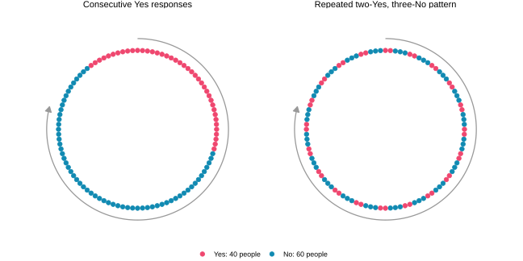
The with-replacement and without-replacement distributions are unchanged. Both mechanisms sample from the same collection of responses with the same probabilities, wherever those responses are placed. The circular walk follows neighboring people, so rearranging the responses can change its distribution.
Every 80-call walk through the repeated pattern completes sixteen five-person periods, giving exactly 32 Yes responses. The consecutive arrangement gives the two separated piles from the opening comparison. The same estimand and the same number of calls can therefore give very different sampling distributions under the same walking rule. We need to understand what each sampling mechanism guarantees.
From Call Sequences to Sampling Distributions
We can see how the sampling mechanisms work on a small example by listing every possible pair of calls. First we will follow the full calculation from callers to responses to their total. Then we will keep just one or two calls and see which parts of that work the properties let us avoid.
We got the binomial and hypergeometric distributions by going from call sequences to response sequences, then from response sequences to their sum. We needed a count of the binary sequences with each sum. And without replacement, we had to keep track of who each call used up.
Two Calls
We draw two people from a population of four: two answer Yes and two answer No. The pictures below show the population and the distribution of the number of Yes responses under all three sampling designs.
With replacement.

Without replacement.
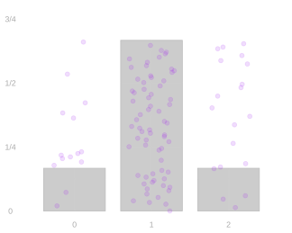
Circular walk.

What changes when we switch from sampling with replacement to sampling without replacement, or follow the circle?
With and without replacement, every possible call sequence is equally likely. But the possible call sequences differ between the two designs. With replacement, each call is an independent uniform pick, so all sixteen ordered pairs of people are equally likely. Without replacement, the sample is a shuffle, so all twelve ordered pairs of distinct people are.
We arrange people 1, 2, 3, and 4 in that order around a circle, pick a starting person uniformly at random, and call them and the next one round. There are four possible starting people, so the four possible pairs each have probability 1/4. The possible pairs are 1 then 2, 2 then 3, 3 then 4, and 4 then 1.
We have used tables to list call sequences. With two calls, we can put the same information in a grid. The first person called is on the y axis and the second is on the x axis, so each cell is one call sequence. Row 1, column 2 means we call person 1 and then person 2. Each cell shows the probability of that sequence and the two responses. We keep this layout for all three designs so we can compare the same pair of callers across them.
With replacement.
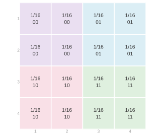
Without replacement.
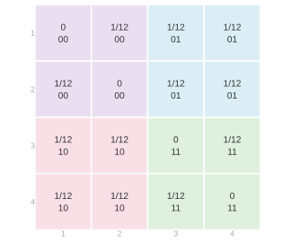
Circular walk.
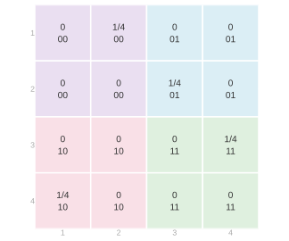
Exchanging the first and second calls reflects each grid across its diagonal. With and without replacement, every cell has the same probability as its reflected cell. This is exchangeability in the picture.
The circular call sequence is not exchangeable. Calling person 1 and then person 2 has probability 1/4; calling person 2 and then person 1 has probability zero. Exchanging the call positions changes the joint distribution.
How do the different call probabilities change the distribution of the responses? The same pair of people still gives us the same pair of responses, so the colors stay the same. To get the probability of a response pair, we add the probabilities of all the call sequences with that color. Those are the same cells under all three designs, but the probabilities we add are different.
Each block of one color in the call grid becomes one cell in the response grid.
Four cells of 1/16 in each block add to 1/4 with replacement; without replacement only two cells are possible where the responses agree, and four where they differ. We get 2/12 where they agree and 4/12 where they differ.
For the circular walk, one of its four possible pairs lies in each response block. Each response pair therefore has probability 1/4.
The response grids below show those sums. Beneath each grid is the distribution of the total number of Yes responses.
With replacement.


Without replacement.

Circular walk.
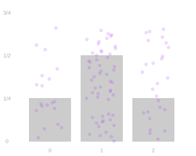
To get the distribution of the sum, we combine response pairs with the same sum. The (0,0) cell gives the probability of summing to zero; the (1,1) cell gives the probability of summing to two. Both (0,1) and (1,0) sum to one, so we add their probabilities. With replacement, the probabilities of zero and two are each 1/4, and the probability of one is 1/2. Without replacement, they are 1/6 each and 2/3, respectively.
Both distributions are centered at one, but sampling without replacement puts more probability at the center and less on either side. The sum is less spread out.
With replacement and the circular walk give the same response distribution here. In the exercise that follows, however, the circular walk matches sampling without replacement instead.
The same call sequences can be listed in a table instead of a grid. The colors group matching response pairs in either layout.
| J1 | J2 | Y1 | Y2 | With replacement | Without replacement | Circular walk |
|---|---|---|---|---|---|---|
| 1 | 1 | 0 | 0 | 1/16 | 0 | 0 |
| 1 | 2 | 0 | 0 | 1/16 | 1/12 | 1/4 |
| 2 | 1 | 0 | 0 | 1/16 | 1/12 | 0 |
| 2 | 2 | 0 | 0 | 1/16 | 0 | 0 |
| 1 | 3 | 0 | 1 | 1/16 | 1/12 | 0 |
| 1 | 4 | 0 | 1 | 1/16 | 1/12 | 0 |
| 2 | 3 | 0 | 1 | 1/16 | 1/12 | 1/4 |
| 2 | 4 | 0 | 1 | 1/16 | 1/12 | 0 |
| 3 | 1 | 1 | 0 | 1/16 | 1/12 | 0 |
| 3 | 2 | 1 | 0 | 1/16 | 1/12 | 0 |
| 4 | 1 | 1 | 0 | 1/16 | 1/12 | 1/4 |
| 4 | 2 | 1 | 0 | 1/16 | 1/12 | 0 |
| 3 | 3 | 1 | 1 | 1/16 | 0 | 0 |
| 3 | 4 | 1 | 1 | 1/16 | 1/12 | 1/4 |
| 4 | 3 | 1 | 1 | 1/16 | 1/12 | 0 |
| 4 | 4 | 1 | 1 | 1/16 | 0 | 0 |
Changing the Population
This time, we’ll draw two people from a different population of four: one answers Yes and three answer No.

The grids below show the possible pairs of people under the same three designs, in the same order.
Color the grids by response pair. Then fill in the response probabilities and sketch the distribution of the total number of Yes responses beneath each response grid.
With replacement.
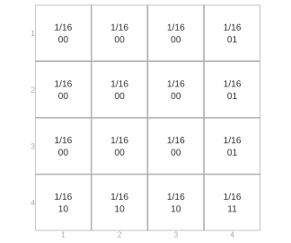
Without replacement.
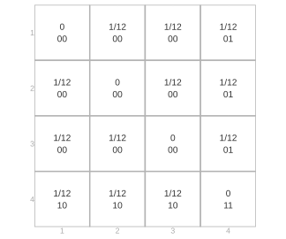
Circular walk.
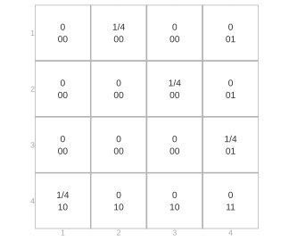
With replacement.


Without replacement.
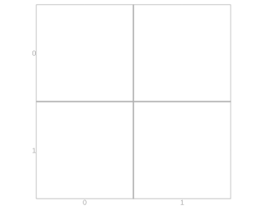

Circular walk.

You could have worked from a table instead, like last time.
| J1 | J2 | Y1 | Y2 | With replacement | Without replacement | Circular walk |
|---|---|---|---|---|---|---|
| 1 | 1 | 0 | 0 | 1/16 | 0 | 0 |
| 1 | 2 | 0 | 0 | 1/16 | 1/12 | 1/4 |
| 1 | 3 | 0 | 0 | 1/16 | 1/12 | 0 |
| 2 | 1 | 0 | 0 | 1/16 | 1/12 | 0 |
| 2 | 2 | 0 | 0 | 1/16 | 0 | 0 |
| 2 | 3 | 0 | 0 | 1/16 | 1/12 | 1/4 |
| 3 | 1 | 0 | 0 | 1/16 | 1/12 | 0 |
| 3 | 2 | 0 | 0 | 1/16 | 1/12 | 0 |
| 3 | 3 | 0 | 0 | 1/16 | 0 | 0 |
| 1 | 4 | 0 | 1 | 1/16 | 1/12 | 0 |
| 2 | 4 | 0 | 1 | 1/16 | 1/12 | 0 |
| 3 | 4 | 0 | 1 | 1/16 | 1/12 | 1/4 |
| 4 | 1 | 1 | 0 | 1/16 | 1/12 | 1/4 |
| 4 | 2 | 1 | 0 | 1/16 | 1/12 | 0 |
| 4 | 3 | 1 | 0 | 1/16 | 1/12 | 0 |
| 4 | 4 | 1 | 1 | 1/16 | 0 | 0 |
With replacement.
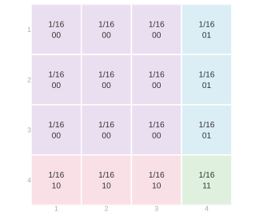
Without replacement.
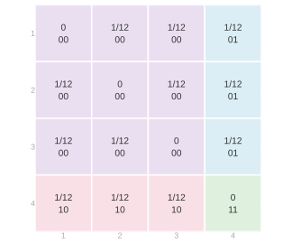
Circular walk.
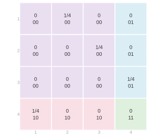
With replacement.
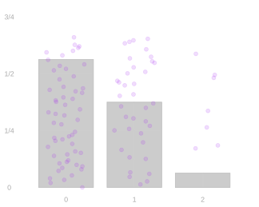
Without replacement.

Circular walk.

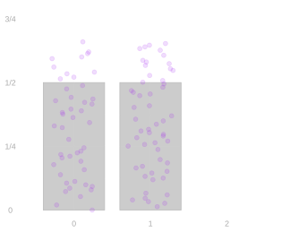
For the circular walk, starting at people 1, 2, 3, and 4 produces responses 00, 00, 01, and 10. Combining matching responses gives the response grid; combining equal totals gives the plot beneath it.
For this population, the response grid and total distribution are the same as under sampling without replacement. The call grids differ: the cycle permits only four of the twelve distinct-person pairs.
Here the circular walk matches sampling without replacement. In the worked example above, with two consecutive No responses and two consecutive Yes responses, it matched sampling with replacement instead. The agreement depends on the population, so it does not make the sampling designs interchangeable. Grouping people by response can hide differences between the sampling designs.
If everyone in the population gives the same response, every call produces that response under all three designs. Completely different caller distributions then give exactly the same response distribution. The useful guarantees are the ones we get from the sampling design without knowing those responses.
Why does a total of two have probability zero when we sample without replacement?
The same work in the table.
| J1 | J2 | Y1 | Y2 | With replacement | Without replacement | Circular walk |
|---|---|---|---|---|---|---|
| 1 | 1 | 0 | 0 | 1/16 | 0 | 0 |
| 1 | 2 | 0 | 0 | 1/16 | 1/12 | 1/4 |
| 1 | 3 | 0 | 0 | 1/16 | 1/12 | 0 |
| 2 | 1 | 0 | 0 | 1/16 | 1/12 | 0 |
| 2 | 2 | 0 | 0 | 1/16 | 0 | 0 |
| 2 | 3 | 0 | 0 | 1/16 | 1/12 | 1/4 |
| 3 | 1 | 0 | 0 | 1/16 | 1/12 | 0 |
| 3 | 2 | 0 | 0 | 1/16 | 1/12 | 0 |
| 3 | 3 | 0 | 0 | 1/16 | 0 | 0 |
| 1 | 4 | 0 | 1 | 1/16 | 1/12 | 0 |
| 2 | 4 | 0 | 1 | 1/16 | 1/12 | 0 |
| 3 | 4 | 0 | 1 | 1/16 | 1/12 | 1/4 |
| 4 | 1 | 1 | 0 | 1/16 | 1/12 | 1/4 |
| 4 | 2 | 1 | 0 | 1/16 | 1/12 | 0 |
| 4 | 3 | 1 | 0 | 1/16 | 1/12 | 0 |
| 4 | 4 | 1 | 1 | 1/16 | 0 | 0 |
Optional: Three Calls
You can do the same calculation with three calls. And you did most of it already in the last two chapters. We’ll use the same population as in the last exercise, going from calls to responses and then to their total S=Y_1+Y_2+Y_3. Each grid now has four layers, one for each person we might call third, from person 1 at the top to person 4 at the bottom. The three designs appear in the same order as before: with replacement, without replacement, and the circular walk.
With replacement.
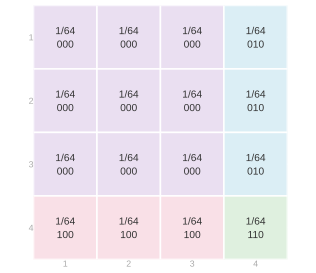


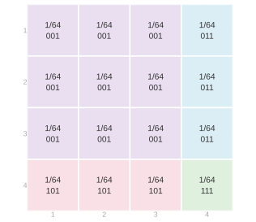
Without replacement.
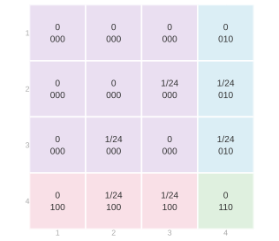
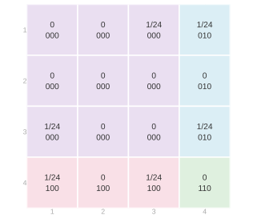
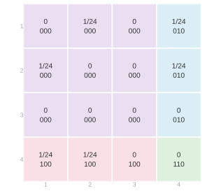
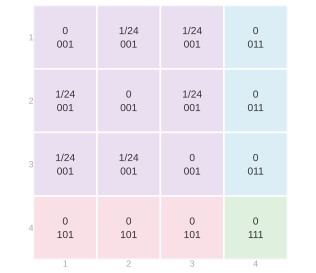
Circular walk.
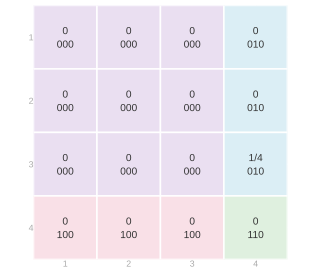
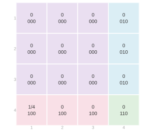
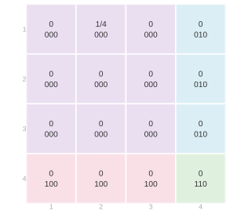
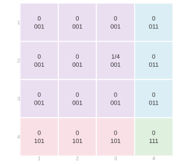
With and without replacement, the same symmetry holds for three calls: exchanging which call labels each axis leaves the probabilities unchanged. This exchanges positions within a sequence; it does not change the sampling design. The circular walk permits 1 then 2 then 3, but not 2 then 1 then 3. Its order matters.
With replacement, all 4^3=64 call sequences are equally likely. To hear No, No, Yes, we can call any of the three people who answer No first, any of those same three second, and only person 4 third. Those 3\cdot3=9 call sequences give probability 9/64. You can work out the probabilities of the other response sequences by counting similarly.
Without replacement, there are 4\cdot3\cdot2=24 equally likely call sequences. To hear No, No, Yes, we have three choices for the first call but only two for the second, giving probability 6/24=1/4. Two or three Yes responses are impossible because only one person answers Yes.
For the circular walk, the four starts give the caller sequences 123, 234, 341, and 412. Their response sequences are 000, 001, 010, and 100. Each has probability 1/4, so No, No, Yes again has probability 1/4.
| Y_1 | Y_2 | Y_3 | With replacement | Without replacement | Circular walk |
|---|---|---|---|---|---|
| 0 | 0 | 0 | 27/64 | 1/4 | 1/4 |
| 0 | 0 | 1 | 9/64 | 1/4 | 1/4 |
| 0 | 1 | 0 | 9/64 | 1/4 | 1/4 |
| 1 | 0 | 0 | 9/64 | 1/4 | 1/4 |
| 0 | 1 | 1 | 3/64 | 0 | 0 |
| 1 | 0 | 1 | 3/64 | 0 | 0 |
| 1 | 1 | 0 | 3/64 | 0 | 0 |
| 1 | 1 | 1 | 1/64 | 0 | 0 |
| Total s | P(S=s) with replacement | P(S=s) without replacement | Circular walk |
|---|---|---|---|
| 0 | 27/64 | 1/4 | 1/4 |
| 1 | 27/64 | 3/4 | 3/4 |
| 2 | 9/64 | 0 | 0 |
| 3 | 1/64 | 0 | 0 |
With replacement.
Without replacement.
Circular walk.

Dividing the total by three gives the sample average, \bar{Y}=S/3. The plots below show its distribution under each sampling design.
With replacement.
Without replacement.

Circular walk.
For sampling with and without replacement, these are the distributions we worked out in the previous chapters: the total has a binomial distribution with replacement and a hypergeometric distribution without replacement. As before, the binomial coefficient \binom{n}{s}, read “n choose s,” is the number of binary sequences of length n with s ones. For n calls from a population of m=m_0+m_1 people, with m_1 answering Yes and m_0 answering No, let \theta=m_1/m. Then \begin{aligned} P(S=s) &= \binom{n}{s}\theta^s(1-\theta)^{n-s} &&\text{with replacement},\\[6pt] P(S=s) &= \frac{\binom{m_1}{s}\binom{m_0}{n-s}}{\binom{m}{n}} &&\text{without replacement}. \end{aligned} Here n=3, m_1=1, m_0=3, m=4, and \theta=1/4, while \binom{3}{0}, \binom{3}{1}, \binom{3}{2}, and \binom{3}{3} are 1, 3, 3, and 1. For the sample average, P(\bar{Y}=s/3)=P(S=s): the probabilities stay the same, and the possible values are divided by three.
Keeping Fewer Calls
We keep the population from the grid exercise: three people answer No and one answers Yes. We will keep fewer calls from the same sampling experiment.
The calculations below go from the joint distribution to distributions of fewer calls. We can always do this by adding probabilities. Uniform individual sampling tells us what the one-call margins must be, while exchangeability tells us when the answer stays the same as we change the positions we keep.
Then we ask whether we can reverse that direction. Independence lets us reconstruct the joint distribution from the individual margins by multiplying their probabilities.
One-call margins
Adding Rows and Columns
The two-call grid gives the probability of each pair of people we might call. It is their joint distribution: it describes both calls together. We can get the distribution of just one call by collapsing the grid to a one-dimensional table. The pictures below show this for sampling with replacement, with the first call on the vertical axis and the second on the horizontal axis.
Earlier we combined call sequences into response sequences before collapsing further. We can use that order here too, or keep one call first and then combine people who give the same answer. We’ll do both.
Keeping one call, then combining matching responses
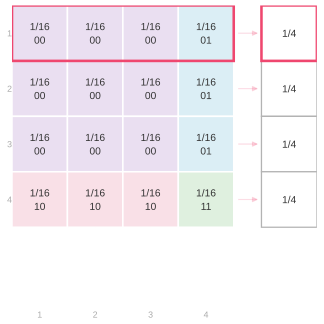
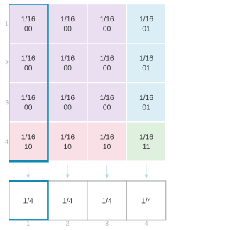
The pink row contains every way to call person 1 first. Its four probabilities of 1/16 add to 1/4. Adding each row gives the distribution of the first call; adding each column gives the distribution of the second. The teal column shows the calculation for calling person 1 second. We call these one-call distributions the marginal distributions, or margins, of the joint.
Without replacement, the diagonal cells have probability zero. Each row or column has three probabilities of 1/12, which still add to 1/4.
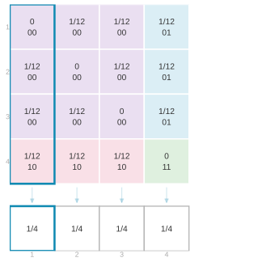
For the circular walk, each row or column has just one nonzero cell, with probability 1/4. Every row and every column contains exactly one of those pairs, giving the same one-call margins as before.
Combining people who give the same answer gives the response distribution. Each of the one-call tables above gives this calculation:
| Response | One-call probabilities combined | Probability |
|---|---|---|
| No (0) | 1/4+1/4+1/4 | 3/4 |
| Yes (1) | 1/4 | 1/4 |
Combining matching responses, then keeping one call
Now we can do it in the other order. The grids below combine call pairs with the same response pair, as we did earlier. For example, No followed by No combines nine cells of 1/16 with replacement, or six nonzero cells of 1/12 without replacement. For the circular walk, No followed by No combines two nonzero cells of 1/4.
With replacement.
Without replacement.
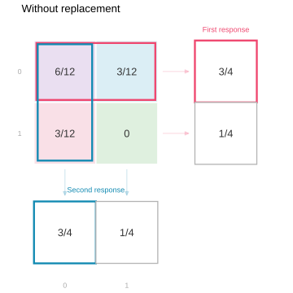
Circular walk.
Collapsing the No row gives 9/16+3/16=3/4 with replacement and 6/12+3/12=3/4 without replacement. The circular walk gives 2/4+1/4=3/4. The remaining probability, 1/4, belongs to Yes. The column margins give the same distribution for the second response.
Both orders add the same original call probabilities into the No and Yes probabilities. From here on, we’ll keep the calls we want first, then combine calls with the same responses.
The Same One-Call Margin Under All Three Designs
All three sampling designs give the same one-call margins. Every person has probability 1/4 at each call position, so each response is No with probability 3/4 and Yes with probability 1/4. Neither the call position nor the number of calls we made changes that distribution.
With the earlier population of two Yes responses and two No responses, each response had probability 1/2. Changing the population changes the responses attached to people, not their chance of being called.
Keeping One of Three Calls
The same one-call margins appear when we make three calls. We do not need the total’s distribution from the optional example. We only need the caller grid: a row fixes the first caller, a column fixes the second, and a layer fixes the third.
To keep just one call, we add a whole sheet: the pink first row from every layer for call 1, the teal first column from every layer for call 2, or the purple first layer for call 3. Each sheet collects every sequence with person 1 in that call position.
With replacement, the sixteen cells of 1/64 sum to 1/4. Without replacement, the other two callers must be different people: there are 3\times2=6 choices, each with probability 1/24, again totaling 1/4. For the circular walk, each sheet contains just one possible sequence, with probability 1/4. The same calculation for the other people completes each table.
With replacement.
Without replacement.
Circular walk.
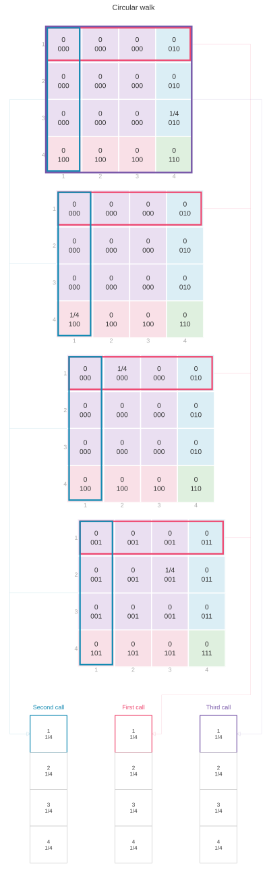
We are back to the same one-call tables we got from two calls, so the response distribution is the same too: No with probability 3/4, Yes with probability 1/4. It doesn’t matter how many calls we made. One call is one call.
Uniform Sampling Gives the Margin Directly
Uniform individual calls already tell us these margins. The first call, obviously: everyone is equally likely to be picked. If you’re rolling a die to decide who to call, it doesn’t matter how many times you roll it. And if you shuffle a deck and draw the top card, or shuffle a deck and then cut it and draw the top card, the cut isn’t going to change anything.
For the circular walk, each possible starting person leads to a different person on any fixed call. Giving the four starts equal chances therefore gives the four people equal chances on that call.
That already gives the response probabilities: three of our four equally likely people answer No, and one answers Yes. We did not need to construct the full joint distribution to find the distribution of one response.
Responses Need Not Be Binary
The same grouping calculation applies to any population. We’ve already been working with a nonbinary outcome: the selected index J_i has m possible values for a population of m people. The response Y_i need not have m distinct values like J_i, or only two like our responses so far. It can be somewhere in between. If the call is uniform over m people, each person has probability 1/m. Let y_j be person j’s response, so Y_i=y_{J_i}. The population mean is \mu=m^{-1}\sum_{j=1}^m y_j.
When our outcomes are binary, it’s easy to describe this distribution. All we need to know is the probability that Y_i is 1. To do that, we sum the probabilities of the selections that result in it being one, P(Y_i=1)=\sum_{j:y_j=1}P(J_i=j)=\frac1m\sum_{j=1}^m y_j=\mu. This collapses out information about our random process that’s irrelevant to Y_i. It collapses the probabilities of selecting each person into our weighted coin flip.
When our outcomes are nonbinary, we need to know the probability that Y_i takes on each possible value. But we calculate it the same way—we sum the probabilities of the selections that result in it taking on that value, P(Y_i=y)=\sum_{j:y_j=y}P(J_i=j). We’re still collapsing out irrelevant information, but what we’re left with is more complicated. It’s a weighted die roll, with one face for each possible value of Y_i. If each person’s response is different, there is nothing to collapse out. For example, giving person j the response y_j=j makes Y_i=J_i: we record the selected index itself. Under uniform sampling, P(Y_i=y)=\begin{cases} 1/m & \text{for }y\in\{y_1\ldots y_m\},\\ 0 & \text{otherwise}. \end{cases}
Why Expectations Add
We’ve already proved that expectations add, no matter how observations behave together. Here’s what that looks like in a response grid. This is the grid for our four-person population, three zeros and one one, sampling with replacement.

Rows are the first response and columns the second; each cell contains the probability of that response pair.
Each cell contributes its own total times its own probability to the expected total S=Y_1+Y_2. The top left cell is two zeros, the two off-diagonal cells have total 1, and the bottom right cell is two ones, \mathop{\mathrm{E}}[S]=0\times\colorbox{#eadff1}{$\displaystyle \frac9{16}$}+1\times\colorbox{#dbeef5}{$\displaystyle \frac3{16}$}+1\times\colorbox{#f9e0e7}{$\displaystyle \frac3{16}$}+2\times\colorbox{#dff0df}{$\displaystyle \frac1{16}$} =\frac{8}{16}=\frac12.
We can add those contributions cell by cell, as we just did, or group them according to the individual responses. Every cell’s total is the first response plus the second, so the first-response contributions collect across the rows and the second-response contributions across the columns, \mathop{\mathrm{E}}[S]=\underbrace{0\times\colorbox{#FCE4EC}{$\displaystyle \frac{9+3}{16}$}+1\times\colorbox{#FCE4EC}{$\displaystyle \frac{3+1}{16}$}}_{\text{the rows}} \;+\;\underbrace{0\times\colorbox{#E0F2F7}{$\displaystyle \frac{9+3}{16}$}+1\times\colorbox{#E0F2F7}{$\displaystyle \frac{3+1}{16}$}}_{\text{the columns}} =\frac14+\frac14=\frac12. Either way we get the same answer. The row sum is \mathop{\mathrm{E}}[Y_1] and the column sum is \mathop{\mathrm{E}}[Y_2], so regrouping has given us \mathop{\mathrm{E}}[Y_1+Y_2]=\mathop{\mathrm{E}}[Y_1]+\mathop{\mathrm{E}}[Y_2]. The joint entered only through its margins, and those margins are the one-call distributions we already had.
This still works when the sampling mechanism makes the responses dependent. Without replacement the response probabilities are 1/2, 1/4, 1/4, and 0; the circular walk has that same grid for this population. Both give an expected total of 1/2. The joint distribution changes, but the expected total depends only on the individual margins. The same regrouping works for three calls, or n, without the cube.
Variance is where this stops. There the pairwise behavior matters, and that is what the rest of this chapter is about.
Two-call margins
Uniform individual calls tell us the one-call margins, but they do not determine the joint distribution of two calls. We can always get a two-call margin by adding probabilities. Whether different pairs of positions give the same answer is a question about exchangeability.
We start with the first two calls. Under each of the three sampling designs, keeping those calls gives the same distribution we’d have gotten making only two calls.
But in this case, the three sampling designs give different distributions of the two callers. Repeated callers are possible with replacement and excluded without it. With and without replacement, the response-pair distributions differ too: two Yes responses have probability 1/16 with replacement and zero without it. The circular response distribution matches the one without replacement for this population.
Adding Layers
Adding the four layers gives the joint distribution of the first two callers. The highlighted cells all call person 1 first and person 2 second; only the third caller changes. Adding their probabilities gives the probability of that pair.
With replacement.
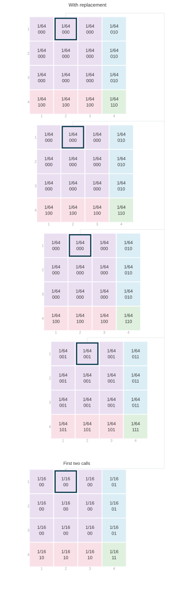
Without replacement.
Circular walk.
With replacement, four probabilities of 1/64 add to 1/16. Without replacement, only people 3 and 4 remain for the third call, so two probabilities of 1/24 add to 1/12. A repeated pair still has probability zero. For the circular walk, only person 3 can follow people 1 and 2. That one sequence has probability 1/4, which is also the probability of the first two callers being people 1 and 2.
Combining cells with the same response pair finishes the calculation. Each entry below adds the probabilities of the call pairs with that response pair:
| First response | Second response | With replacement | Without replacement | Circular walk |
|---|---|---|---|---|
| No (0) | No (0) | 9\times(1/16)=9/16 | 6\times(1/12)=1/2 | 2\times(1/4)=1/2 |
| No (0) | Yes (1) | 3\times(1/16)=3/16 | 3\times(1/12)=1/4 | 1\times(1/4)=1/4 |
| Yes (1) | No (0) | 3\times(1/16)=3/16 | 3\times(1/12)=1/4 | 1\times(1/4)=1/4 |
| Yes (1) | Yes (1) | 1\times(1/16)=1/16 | 0 | 0 |
Exchangeability Lets One Pair Stand for Any Pair
With and without replacement, exchangeability tells us that any two fixed positions have the same joint distribution as the first two. Nothing singles out the first pair. Rearranging the positions gives another allowed sequence with the same probability, so the distribution of a pair is the same whichever two fixed positions we choose. The two calls don’t have to be consecutive.
For these two sampling schemes, reordering the call positions preserves both the allowed sequences and their probabilities. The possible set varies — every sequence of n people with replacement, every sequence of n distinct people without — but rearranging positions keeps a sequence inside its allowed set. All sequences in that set have the same probability. These two designs are therefore exchangeable.
In each design, every allowed pair in two fixed positions has the same number of completions to a full call sequence. With replacement, the other calls can be any people; without replacement, they can be any distinct remaining people. Adding the equally likely completions leaves all allowed pairs equally likely. The allowed pairs differ between the two designs, so uniformity does not give them the same two-call distribution.
If you’re rolling a die, it doesn’t matter how many times you roll it. Any one roll, or any pair of rolls, has the same distribution. It’s maybe a little less obvious when you shuffle a deck. But drawing the top card, or cutting the shuffled deck and then drawing the top card, gives the same distribution. All configurations are equally likely after the cut. The same goes for drawing two cards. Cutting between draws doesn’t change that either. If you could change the distribution of a deck by cutting it, you wouldn’t be allowed to cut it. This is why we didn’t need the full three-call calculation to get the distributions of one or two calls: the sampling design already determines them.
So the calculation was a painstaking way of seeing that. The calculation is useful to get the distribution of the sum. But to get down to a smaller sample size, we didn’t really have to do it. It just falls off the principle of the thing. From sequences to subsequences.
The circular walk shows why exchangeability matters here. Keeping its first two calls gives 12, 23, 34, or 41, each with probability 1/4. Keeping its first and third calls gives 13, 24, 31, or 42 instead. Calling person 1 first and person 3 third has probability 1/4, but starting a two-call walk with person 1 then person 3 is impossible. The one-call margins stay the same; the joint distribution of the pair depends on which positions we keep. All four allowed call sequences are equally likely, but that does not make the calls exchangeable.
Independence Lets Us Recover the Joint from Its Margins
Can we reverse the collapse and recover the joint distribution from its margins? Consider the three response grids below, again for our population of three No responses and one Yes response.
With replacement.

Without replacement.

Circular walk.
The bottom row of each grid sums to 1/4, the probability that the first response is Yes. The right column also sums to 1/4, the probability that the second response is Yes. The remaining row and column each sum to 3/4. The margins are identical, although the with-replacement joint distribution differs from the other two.
We say that two random variables are independent when every joint probability is the product of the corresponding marginal probabilities.
With replacement, multiplying the margins recovers every cell. For two Yes responses, we get (1/4)\times(1/4)=1/16; for No followed by Yes, (3/4)\times(1/4)=3/16; and for two No responses, (3/4)\times(3/4)=9/16.
Without replacement, that multiplication would put probability 1/16 in the Yes–Yes cell, but its actual probability is zero. There is only one person who answers Yes, and we cannot call that person twice. The two responses are dependent. Knowing their separate distributions does not tell us that hearing Yes twice is impossible. Independence is the extra condition that lets us reverse the collapse by multiplying; the margins alone do not determine the joint distribution.
The circular walk also has zero probability of two Yes responses. Its response grid happens to match the one without replacement here. In its caller grid, every person still has probability 1/4 on each call. The calls are dependent: once we know the first person, we know the second. Multiplying those margins would give 1/16 in every cell, which is not this joint distribution.
All three designs sample uniformly at random, but only sampling with replacement gives independent calls. Independent calls always give independent responses; dependent calls sometimes do too, as they would if everyone in the population gave the same response, so independence of the calls is the stronger property and the one the design guarantees. With and without replacement, the call sequence is also exchangeable; the circular call sequence is not.
What the Sampling Design Guarantees
The sampling design determines the joint distribution of the calls. The grids illustrate three properties of that distribution that we can use to understand what happens when we keep fewer calls, reorder them, or combine their responses.
Uniform individual calls
With a fair die, every face has the same chance on your first roll, your second roll, your third roll. A shuffled deck has the same property: any card has the same chance of being first, second, or third. The circular walk does too. To reach a particular person on the second call, we must start one person before them; to reach them on the third, we must start two people before them. Each required starting person has the same chance.
We say that a call selects a person uniformly at random if every person in the population has the same chance of being selected. The first call, the second call, the third call, and so on each have this property under all three designs. Each observed response therefore has the population’s response distribution. The chance of hearing Yes is the fraction of people who answer Yes, whichever call we look at.
Exchangeability
If we shuffle a deck and then cut it without looking at the cards, we still have a shuffled deck. Moving the cut does not make any particular ordering more likely. The same is true if we rearrange the face-down cards in any fixed order. Or if we roll several fair dice and rearrange them without looking at the results. The possible ordered results and their probabilities stay the same.
We say that a sequence of calls is exchangeable if reordering its positions leaves its joint distribution unchanged. The distribution at any fixed set of positions is then the same as at the corresponding number of initial positions. For sampling with or without replacement, those initial calls are themselves a smaller sample under the same design. We can therefore keep any fixed positions and already know their joint distribution.
Independence
When we roll a die afresh for every call, knowing the earlier rolls does not change the chances on the next roll. Drawing cards without replacement is different: a card already drawn cannot be drawn again. In the circular walk, knowing the first person tells us every person we will call afterward.
We say that the calls are independent if the probability of every particular caller sequence is the product of the individual caller probabilities. When calls are independent, their individual distributions determine their joint distribution, and the responses are independent as well. This is a property of the design rather than of the population: it holds whatever responses the people we call happen to give.
These are nested restrictions on the designs we are comparing. All three have uniform individual calls. With and without replacement also have exchangeability. With replacement has independence as well. When the individual calls all have the same distribution, independence implies exchangeability: reordering the calls only reorders the factors in the same product. It also makes the covariance between two distinct calls zero, which is what gave us the square-root rate in the previous lecture. These are properties of the sampling mechanisms we actually use, not assumptions we impose on an arbitrary collection of random variables.
| Property of the calls | With replacement | Without replacement | Circular walk |
|---|---|---|---|
| Uniform individual calls: every person has the same chance on the first call, the second, and so on | Yes | Yes | Yes |
| Exchangeability: reordering call positions preserves the joint distribution | Yes | Yes | No |
| Independence: knowing earlier calls does not change the chances on the next call | Yes | No | No |
The shared one-call distributions explain the common means of the totals in the opening pictures. Their spread also depends on how responses vary together, which the one-call distributions do not tell us.
Calculating the Variance Under Dependent Sampling
In the previous lecture, we wrote the variance of a mean from uniform, exchangeable calls as \mathop{\mathrm{\mathop{\mathrm{V}}}}[\bar Y]=\frac{\sigma^2}{n}+\frac{n-1}{n}c, where \mu and \sigma^2 are the population mean and variance, and c=\mathop{\mathrm{Cov}}(Y_1,Y_2)=\mathop{\mathrm{E}}[(Y_1-\mu)(Y_2-\mu)] is the covariance at any pair of distinct call positions. The grids now tell us when one pair can stand for all the others.
Without Replacement: Negative Covariance Reduces Variance
Without replacement, the distinct-call covariance is nonpositive. This is why its sampling distribution is narrower than the with-replacement distribution in the opening comparison. When we call everyone, the sample mean is the population mean and its variance is zero. We can calculate the pair covariance directly.
The algebra that follows is the caller grid. Adding z_hz_j over all m^2 cells of the m\times m grid factors as (\sum_jz_j)^2, which is zero. Sampling without replacement removes the m cells on the diagonal, where both calls reach the same person, and those cells hold the squares z_j^2. Starting from a total of zero and subtracting a sum of squares is what leaves a negative number behind.
Let z_j=y_j-\mu for each of the m people. Every ordered pair of distinct people has probability 1/\{m(m-1)\}. Because \sum_jz_j=0 and \sum_jz_j^2=m\sigma^2, \begin{aligned} \mathop{\mathrm{Cov}}(Y_1,Y_2) &=\frac1{m(m-1)}\sum_{h\ne j}z_hz_j\\ &=\frac{(\sum_jz_j)^2-\sum_jz_j^2}{m(m-1)}\\ &=-\frac{\sigma^2}{m-1}. \end{aligned} Exchangeability makes this the covariance for every pair of distinct positions. Substituting gives the finite-population correction, \begin{aligned} \mathop{\mathrm{\mathop{\mathrm{V}}}}[\bar Y] &=\frac{\sigma^2}{n}-\frac{n-1}{n}\frac{\sigma^2}{m-1}\\ &=\frac{\sigma^2}{n}\frac{m-n}{m-1}. \end{aligned} This is zero when n=m. When n is small relative to m, the correction is close to one.
The Circle’s Covariances Depend on Position
The alternating circle shows why we cannot expect the same sample-size behavior from every design. Each centered response is -1/2 or 1/2. Adjacent calls always disagree, so their centered product is -1/4; calls two positions apart always agree, so their product is 1/4. With two calls, the negative pair term cancels the individual variances. The third call brings in a positive pair term, and the variance becomes positive again. Which pair of positions we keep matters.
The two columns represent the two equally likely types of starting position. Every pair of consecutive calls contains one zero and one one. A third call repeats the first response, giving means 1/3 and 2/3 with equal probability.
The one-call distributions still give the correct mean and individual variance. But a single two-call table cannot stand for every pair of positions in this design. We must use the table for the pair whose covariance we want.
Practical Exchangeable Designs
The calculation for independent calls is useful when we can draw people independently across the population. Collecting nearby observations can be much easier in practice, but those observations share a location. We need to account for that shared choice.
Exchangeability by itself is cheap, and we already have two exchangeable designs on the page. Flip a coin to decide whether to sample with replacement or without it, and the result is a third exchangeable design: mixing two designs with fixed probabilities leaves every pair of positions with the same mixture of the two pair distributions. It is also of no use to anybody. Deciding at random which of the two to run saves us no travel and groups nobody by location. What we want is exchangeability and locality at once, which is what sampling in groups gives us.
The Current Population Survey selects geographic sampling units and then housing units within them.1 This gives us a practical reason to study sampling in groups. We will use an equal-sized-block model to see where exchangeability helps with the calculation.
Calling nearby houses makes collecting a sample easier. The circular walk does this, but different pairs of call positions have different distributions. Choosing a random block gives us another way to keep locality. Divide the population into q equally sized blocks, each with r people, so there are m=qr people altogether. Choose one block uniformly at random, then make independent uniform draws with replacement within that block.
Each person has probability (1/q)(1/r)=1/m of being selected on any fixed call. The individual calls are uniform over the whole population.
Suppose the people we call all come from the same block. The probability of calling them, in that order, is 1/(q r^n): 1/q to choose their block, then 1/r for each call to land on the right person. If they don’t all come from one block, the probability is zero. Whether or not every call goes to a person who lives in one block doesn’t change if we make the calls in a different order, and that’s all the probability depends on. That’s exchangeability.
We can calculate any ordered pair directly, including a repeated person. If the two people are in the same block, the probability of calling them in that order is (1/q)(1/r^2); if they are in different blocks, it is zero. This law is the same at every pair of distinct call positions. Grouping the people by their responses gives the response-pair law we need for variance.
The sampling distribution of the mean may still be wide. Exchangeability makes the pair calculation reusable; it does not make the pair probabilities multiply as though the calls were independent.
One Block Leaves Between-Block Variation
The two-bump picture from the previous chapter is an example of this distinction, and it is not the two-bump picture at the start of this one: that one was the circular walk. There a fair coin chose a response probability of 0.3 or 0.7. We then take 100 independent binary draws with that chosen probability and plot their average. Those are the two sample-mean distributions mixed in the picture.
Conditional on the coin, the calls are independent and exchangeable. Mixing the two possibilities leaves them exchangeable. But before we know the coin, the responses are dependent. Each response is one with probability 1/2, while two responses are both one with probability P(Y_1=1,Y_2=1) =\frac12(0.3)^2+\frac12(0.7)^2 =0.29. The product of the individual probabilities is (1/2)(1/2)=0.25. The individual variance is therefore 1/4, and the distinct-pair term is c=0.29-0.25=0.04. Substituting into the exchangeable-sequence formula gives \operatorname{Var}(\bar Y)=0.04+\frac{0.21}{n}. The variance decreases as we add calls, but it does not tend to zero.
The mean of the sample average is 1/2, but its draws tend to sit near 0.3 or 0.7. Exchangeability has not made this average look like an average of independent draws from the overall response distribution. It tells us that one pair law serves all positions. We must still use the actual pair law when we calculate the spread.
This has the same structure as the random-block design: one random choice sets the response distribution for all the calls. In a finite population, the two probabilities are the two blocks’ actual response fractions. Choosing one block keeps locality and exchangeability, so one pair calculation serves every pair of positions. The catch is the spread. As we make more calls within the chosen block, the sample average concentrates near that block’s mean. Across repeated samples, different chosen blocks can produce different bumps: more calls within one block do not remove the variation between block means. In practice we don’t do this once, and couldn’t reasonably: a survey that calls one block is a survey of that block.
Averaging Across Blocks
The practical version chooses many blocks, with or without replacement, and makes calls within each. Calls from the same block selection share the chosen block. Calls from different selections need not. These two kinds of pairs generally have different joint distributions. This grouped sequence of calls need not be globally exchangeable, so the spread calculation must distinguish pairs from the same block selection and pairs from different selections. With blocks of size one and one call per selected block, that is just sampling with replacement or without it: our two earlier designs are block designs with the smallest possible blocks. Bigger blocks buy locality. With a fixed number of calls per block, the average settles down as we increase the number of blocks.
We can instead treat each block selection as one observation. Let A_b be the average of the calls made within the bth selected block. If we make the same number of calls within each of k selected blocks, the overall sample mean is \hat\mu=\frac1k\sum_{b=1}^k A_b. For the block selections, we use either independent uniform draws with replacement or a uniformly chosen ordered sample without replacement. We independently repeat the same within-block sampling procedure for each selection. The block averages are then exchangeable: reordering the block selections leaves their joint distribution unchanged. Our cases calculation now applies to the A_b’s. For k\ge2, \mathop{\mathrm{\mathop{\mathrm{V}}}}[\hat\mu]=\frac{\mathop{\mathrm{\mathop{\mathrm{V}}}}[A_1]}{k}+\frac{k-1}{k}\mathop{\mathrm{Cov}}(A_1,A_2). With independent block selections and fresh independent draws within each selection, the block averages are independent, so their covariance is zero. Calls within one selection still share a block. The units we average independently are the block averages.
The population stays fixed. The middle row adds calls within the same selected block; the bottom row spreads six calls over three selected blocks. Calls within each selected block are with replacement, so the same person can contribute more than one observation. These are possible samples under the designs, not their full sampling distributions.
The diagram makes its within-block calls with replacement because that is the easiest mechanism to draw and to compute with: every call is a fresh roll of a die. Nobody runs a survey that way. In practice we shuffle instead, taking distinct blocks and distinct people within each one, so the calculation that follows samples without replacement at both stages. We choose distinct blocks uniformly and shuffle the people within each selected block, taking the first four. Here the population is 128 blocks of eight people. Half the blocks were generated with a Yes probability of 0.1, and half with 0.9; their eight realized responses are then held fixed.
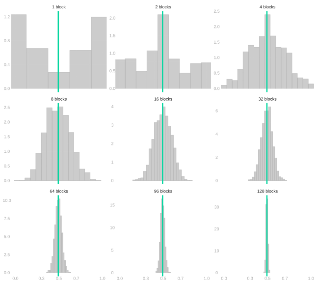
Each panel selects blocks without replacement and makes four calls without replacement within each selected block. The green line marks the population mean. The panels share a horizontal scale; their vertical density scales vary. Increasing the number of blocks reduces the variation from choosing particular blocks. Even when we select all 128 blocks, we have sampled only half the people within each, so some within-block uncertainty remains.
The Two-Stage Variance Calculation
Let block h contain fixed responses y_{h1}\ldots y_{hr}. We define its mean and its within-block variance as \mu_h=\frac1r\sum_{j=1}^r y_{hj} \qquad\text{and}\qquad \sigma_h^2=\frac1r\sum_{j=1}^r(y_{hj}-\mu_h)^2. The overall mean is \mu=q^{-1}\sum_h\mu_h. We define the between-block variance and the average within-block variance as \sigma_B^2=\frac1q\sum_{h=1}^q(\mu_h-\mu)^2 \qquad\text{and}\qquad \sigma_W^2=\frac1q\sum_{h=1}^q\sigma_h^2. We choose k of the q blocks without replacement. Within each selected block we independently choose t of its r people without replacement, and A_b is their average. Equal block sizes and the same t in each selected block make the overall sample mean \hat\mu=k^{-1}\sum_b A_b unbiased for \mu. Assume q,r\ge2.
The block averages are exchangeable, so the formula above applies to them: \mathop{\mathrm{\mathop{\mathrm{V}}}}[\hat\mu]=\mathop{\mathrm{\mathop{\mathrm{V}}}}[A_1]/k+\frac{k-1}{k}\mathop{\mathrm{Cov}}(A_1,A_2). All that is left is to find those two pieces.
First fix a selected block h. The without-replacement calculation we just made gives its sample average mean \mu_h and variance \frac{\sigma_h^2}{t}\frac{r-t}{r-1}. We can write A_b=\mu_h+\varepsilon_b, where the within-block sampling error \varepsilon_b has expectation zero for each possible selected block. Squaring A_b-\mu=(\mu_h-\mu)+\varepsilon_b and averaging therefore gives no cross term. Averaging over the uniformly chosen block gives \mathop{\mathrm{\mathop{\mathrm{V}}}}[A_1]=\sigma_B^2+\frac{\sigma_W^2}{t}\frac{r-t}{r-1}. For two different selections, the within-block errors are independent once their blocks are fixed, and each has mean zero. Only the selected block means contribute to their covariance. The block means are sampled without replacement, so the same distinct-pair calculation gives \mathop{\mathrm{Cov}}(A_1,A_2)=-\frac{\sigma_B^2}{q-1}. The exchangeable-average formula now gives, for k\ge2, \begin{aligned} \mathop{\mathrm{\mathop{\mathrm{V}}}}[\hat\mu] &=\frac1k\left\{\sigma_B^2+\frac{\sigma_W^2}{t}\frac{r-t}{r-1}\right\} -\frac{k-1}{k}\frac{\sigma_B^2}{q-1}\\ &=\underbrace{\frac{\sigma_B^2}{k}\frac{q-k}{q-1}}_{\substack{\text{between-block variation}\\\text{(0 when }k=q\text{)}}} \;+\; \underbrace{\frac{\sigma_W^2}{kt}\frac{r-t}{r-1}}_{\substack{\text{within-block variation}\\\text{(0 when }t=r\text{)}}}. \end{aligned} For one selected block, the same final formula follows from \mathop{\mathrm{\mathop{\mathrm{V}}}}[A_1]. The two terms show the two sources of variation. Sampling all blocks removes the between-block term. Calling everyone in each selected block removes the within-block term. Doing both makes the estimate exact.
We can sample by shuffling rather than literally rolling dice. Shuffle the block labels and keep the first k, then shuffle the people in each selected block and keep the first t. That produces the same uniform without-replacement samples. The two finite-population corrections account for what we have already covered at each stage; discarding them would give the variance of a different design. The block-level correction \frac{q-k}{q-1} is the one most easily forgotten and the one that bites hardest: when we select a substantial fraction of the blocks it falls well below one, and dropping it overstates the precision we lose.
This formula is what we came for. The calls within a selected block are dependent, and nothing above pretended otherwise. Exchangeability did not make the design precise: the between-block term \sigma_B^2 k^{-1}(q-k)/(q-1) stays where it is however many people we call inside each block. What exchangeability bought us is that one pair of block averages stands for every pair, and that is what made the variance of a dependent design something we could write down.
See the Bureau of Labor Statistics’ description of the CPS sample design.↩︎